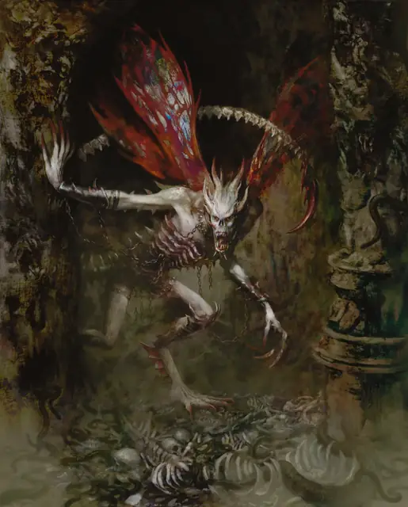

Костяной дьявол (осилут)
Bone Devil
Большое Исчадие (Дьявол), Принципиальное Злое

Класс Защиты 16 Инициатива +7 (17)
Хиты 161 (17к10 + 68)
Скорость 40 футов, Полёта 40 футов
| мод | спас | ||
|---|---|---|---|
| СИЛ | 18 | +4 | +8 |
| ЛОВ | 16 | +3 | +3 |
| ТЕЛ | 18 | +4 | +4 |
| мод | спас | ||
|---|---|---|---|
| ИНТ | 13 | +1 | +5 |
| МДР | 14 | +2 | +6 |
| ХАР | 16 | +3 | +7 |
Сопротивление урону Холод
Иммунитеты Огонь, Яд; Отравленный
Чувства Тёмное зрение 120 футов (игнорирует магическую Темноту), пассивное Восприятие 12
Языки Инфернальный, Телепатия 120 фт.
Опасность 9 (5 000 опыта; БВ +4)
Особенности
Восстановление дьявола. Когда дьявол умирает запределами Девяти Преисподних, его тело превращается в сернистое облако и в тот же миг заново возрождается со всеми Хитами где-то в Девяти Преисподних.
Сопротивление магии. Дьявол совершает с Преимуществом спасброски от заклинаний и прочих магических эффектов.
Действия
Мультиатака. Дьявол совершает две атаки Когтями и одну атаку Дьявольским жалом.
Когти. Бросок рукопашной атаки: +8, досягаемость 10 фт. Попадание: 13 (2к8 + 4) Рубящего урона.
Дьявольское жало. Бросок рукопашной атаки: +8, досягаемость 10 фт. Попадание: 15 (2к10 + 4) Колющего урона плюс 18 (4к8) урона Ядом, и цель становится Отравленной до начала следующего хода дьявола. Пока цель Отравлена, она не может восстанавливать Хиты.
Бонус мастерства +4
Среда обитания Девять преисподних
Сокровища Инструментальные
Костяной дьявол
Дьявол ужаса и повиновения
Костяные дьяволы (также известные как осилуты) — измождённые кошмарные Исчадия, чьи тела туго обтянуты иссохшей кожей и сочетают в себе черты человека и насекомого. Они держат в подчинении слабых дьяволов и прочих созданий, примкнувших к легионам. Костяные дьяволы следят за неукоснительным исполнением приказов адских владык и выполнением обязательств других существ перед Девятью Преисподними. Они расправляются со всеми, кто нарушил условия дьявольской сделки, и обрекают вероломные души смертных на невыразимые страдания.
Когда костяные дьяволы не служат своим адским хозяевам, они искушают эгоистичных смертных и обещают сделать их кумирами, а других — покорными их воле. Эти дьяволы часто стоят за спиной мелких тиранов и подталкивают их к циничным и жестоким поступкам.
Костяные дьяволы путешествуют по мультивселенной, исполняя инфернальные приказы, и в случае острой необходимости даже могут привлечь смертных для достижения своих злобных целей. Совершите бросок по таблице «Задание костяного дьявола» для вдохновения или выберите сами цель дьявола.
Задание костяного дьявола
| 1к4 | Костяной дьявол стремится... |
| 1 | Поймать душу, сбежавшую из Девяти Преисподних. |
| 2 | Передать послание от архидьявола или наказать кого-то в пример другим. |
| 3 | Разыскать нарушившего условия дьявольской сделки. |
| 4 | Кого-то убить или что-то украсть во исполнение своей части договора с нечестивым магом. |